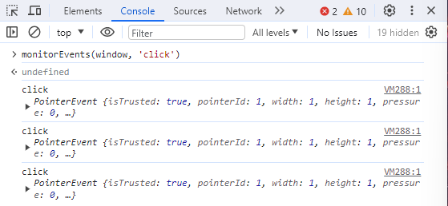
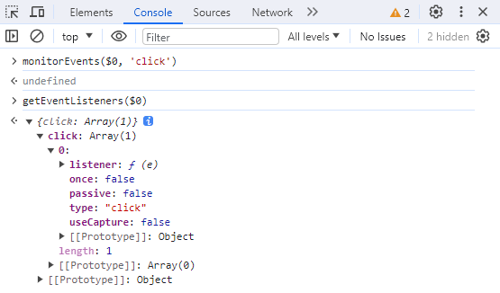

2024-06-08 13:57:08 · YinHao
执行 monitorEvents 来监听并打印出元素触发的事件，也可以传入数组来一次性监听多种事件，例如：
monitorEvents(window, "click");
monitorEvents(window, ["mousedown", "mouseup"]);

除了能监听特定事件外，还能监听事件类别，例如 monitorEvents(window, 'touch') 来监听所有 touch 类别的事件。
若要停止监听，则执行 unmonitorEvents(元素, 事件)。
执行 getEventListeners(元素) 以打印出所有注册在元素上的事件监听器。
$0 元素原本并无注册任何事件监听器，执行 monitorEvents($0, 'click') 后，可以看到已注册所有 touch 类别的事件监听器，
